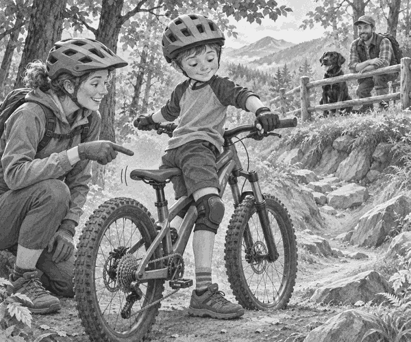

Tom stopped at the top of Dragon Steps.
The trail dipped down through the trees.
It was short.
It was rocky.
It was very steep.
Coach Mia stood beside him.
Dad and Scout watched from behind the wooden fence.
Tom looked at his tall saddle.
“It bumps me when I move back,” he said.
Mia pointed to a small lever on his handlebar.
“Press it and sit down,” she said.
Tom pressed the lever.
Hiss!
The saddle slid down into the bike.
Tom blinked.
“My saddle has vanished!”
Mia laughed. “It is still there. You have a dropper post.”
Bike fact: A dropper post lets a rider lower the saddle with a lever. The extra space helps the rider move over the bike on steep ground.
Tom rolled to the practice slope.
He kept both pedals level.
He looked along the trail.
His arms and knees stayed soft.
The low saddle did not bump him.
Tom rolled down one step.
Rum-rum.
Then another.
Rum-rum.
He used the brakes gently.
At the bottom, Scout gave one proud bark.
Tom smiled and stood tall on the pedals.
He pressed the lever again.
Pop!
The saddle rose back up for the climb home.
It had not vanished after all.
It had simply made room for an adventure.